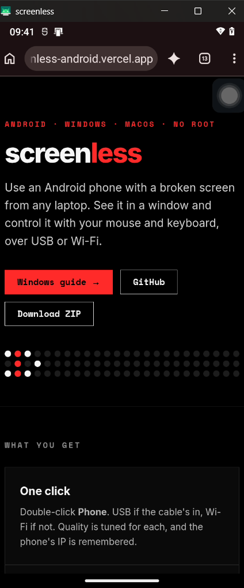
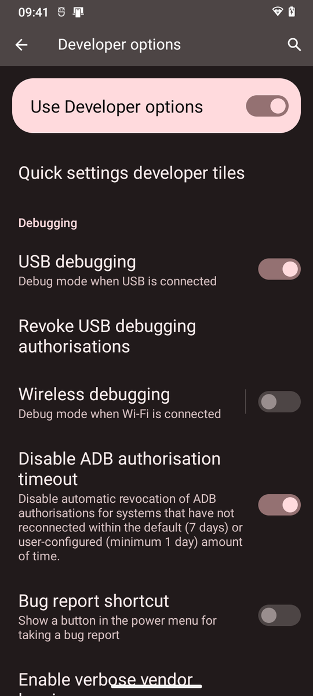
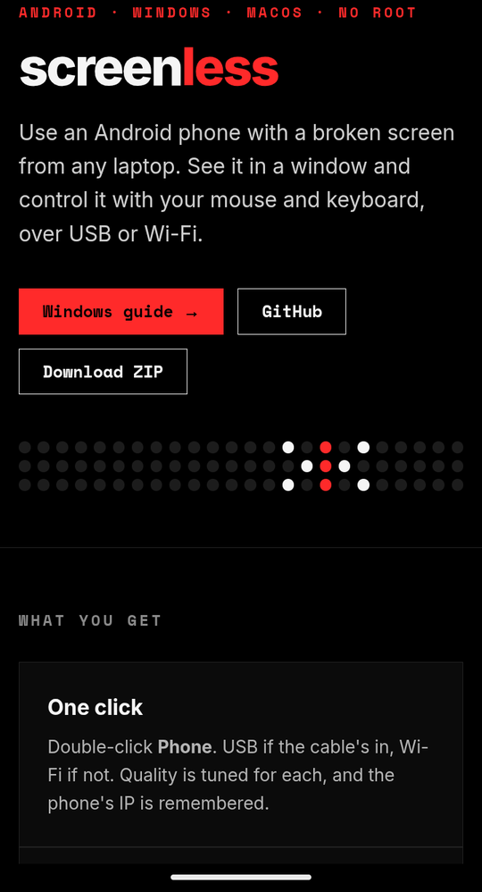

Use an Android phone with a broken screen from any laptop. See it in a window, control it with your mouse and keyboard, over USB or Wi-Fi.

Captured on the real phone, driven entirely from a Windows 11 laptop over USB.


Recorded with scrcpy --record while scrolling the phone from the laptop. No touchscreen, no cable after the first run.
A developer tool turned into something you just double-click.
Double-click Phone. USB if the cable’s in, Wi-Fi if not. Quality is tuned for each, and the phone’s IP is remembered.
Mouse, keyboard, clipboard and pattern unlock from the laptop. The phone’s damaged display stays off.
Run once over USB and it switches the phone into wireless mode. After that, no cable.
Copy the phone’s trusted key to a friend’s laptop and it connects with no “Allow?” prompt.
Reversible tuning: quicker animations, stay-awake, bloatware off. +671 MB free RAM on the Windows run.
Open OpenCode or Claude Code in the folder and say “connect my phone”. It follows AGENTS.md.
Four steps, about ten minutes the first time.
Settings → About phone → tap Build number 7×. Then Developer options → USB debugging ON.
Downloads scrcpy into your user folder and puts a “Phone” shortcut on your Desktop. No admin rights, no Microsoft Store.
git clone https://github.com/Vighnesh2514/screenless-android C:\screenless cd C:\screenless\windows powershell -ExecutionPolicy Bypass -File .\install.ps1 powershell -ExecutionPolicy Bypass -File .\doctor.ps1
First time only: tap Always allow on the phone. The mirror opens.
Unplug, double-click Phone again. Same Wi-Fi network needed.
On a Mac, use Cmd instead of Alt.
The lag was RAM and 2.4 GHz Wi-Fi — not the mirroring software.
| Before | After | What changed | |
|---|---|---|---|
| Free RAM | 650 MB | 860 MB | 12 background bloat apps disabled |
| Animations | 1.0× | 0.5× | Screens open about twice as fast |
| Mirror black on Wi-Fi | Yes | No | Stay-awake that works without charging |
| Wi-Fi ping, 2.4 GHz hotspot | 166 ms avg | — | Network-bound: use 5 GHz or USB |